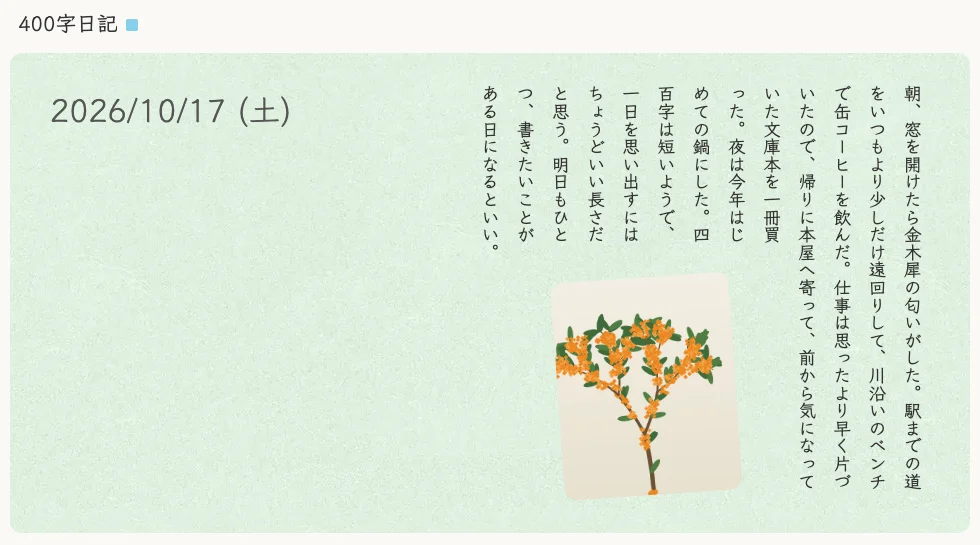
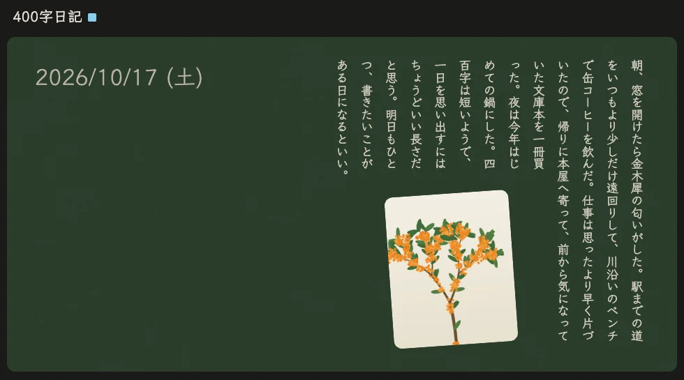
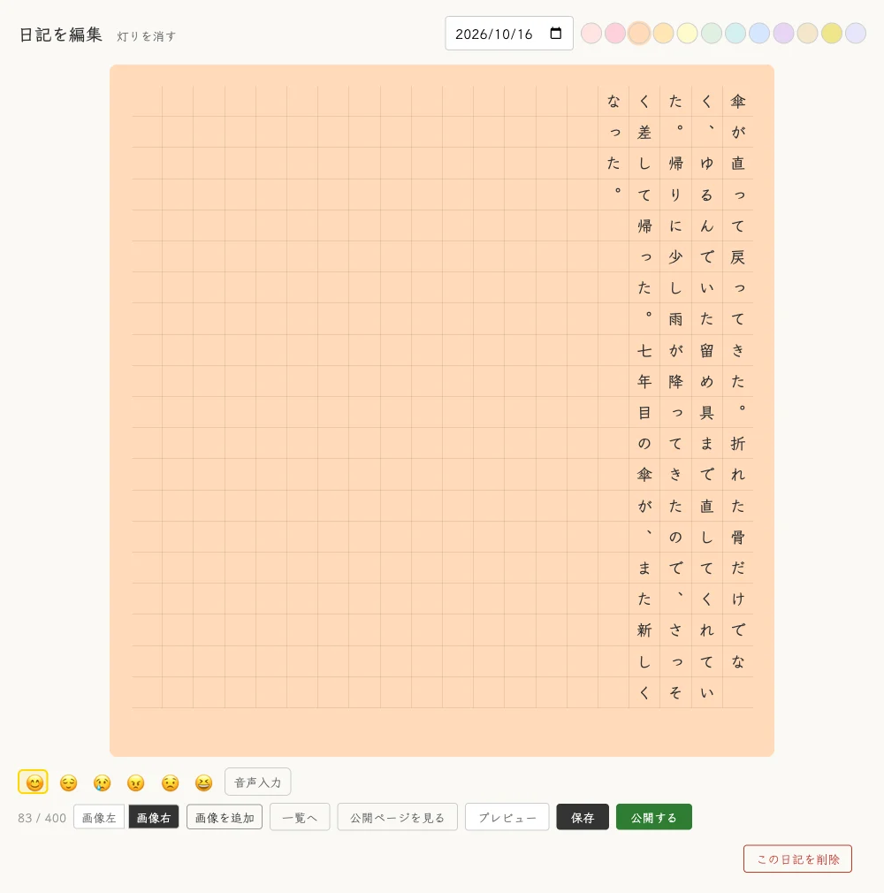
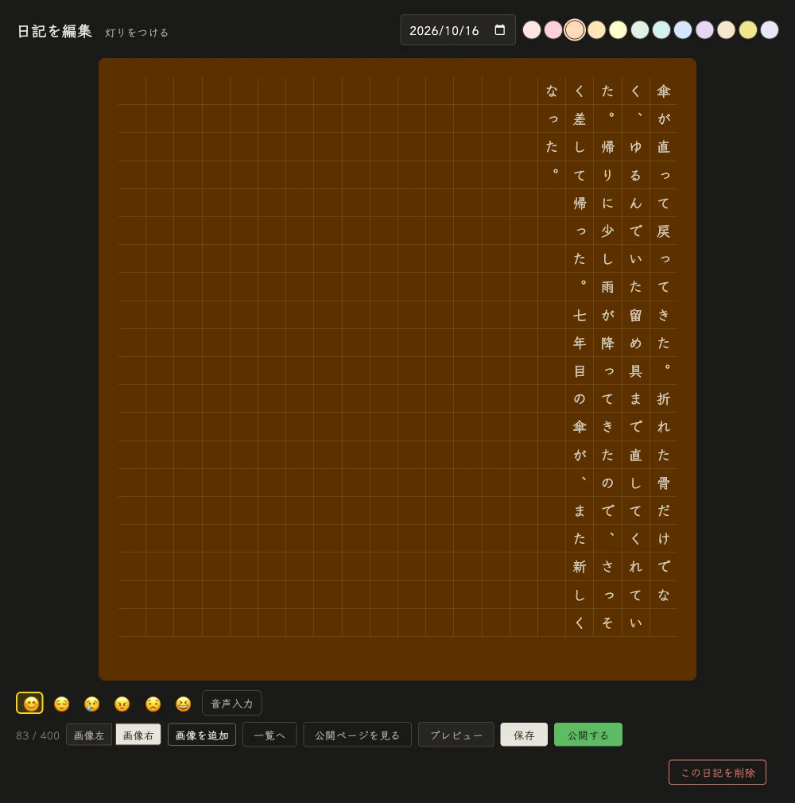
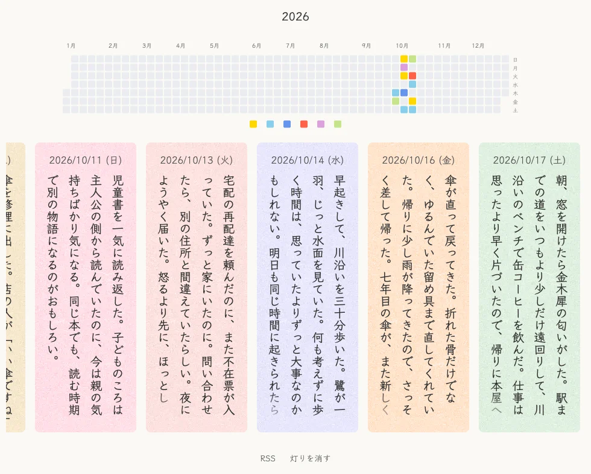
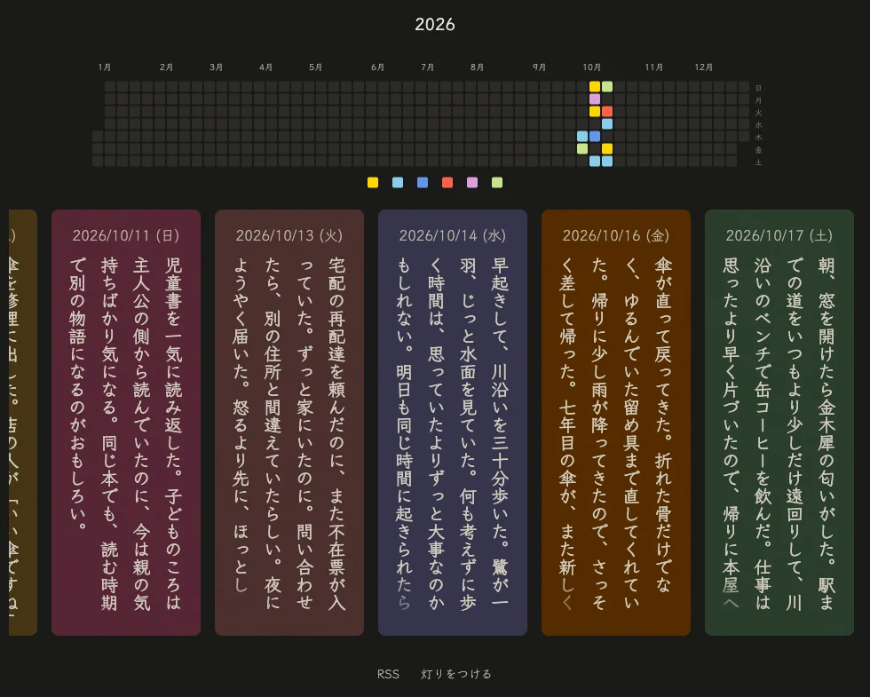

20 × 20 の原稿用紙で綴る日記
一日の終わりに、四百字だけ書く日記です。縦書きの原稿用紙に綴り、公開したい日だけを公開できます。ソースコードを公開しているので、fork して自分の日記として使えます。
朝、窓を開けたら金木犀の匂いがした。駅までの道をいつもより少しだけ遠回りして、川沿いのベンチで缶コーヒーを飲んだ。仕事は思ったより早く片づいたので、帰りに本屋へ寄って、前から気になっていた文庫本を一冊買った。夜は今年はじめての鍋にした。四百字は短いようで、一日を思い出すにはちょうどいい長さだと思う。明日もひとつ、書きたいことがある日になるといい。
どれも見本の日記で撮った、実際の画面です。






書くのは書き手ひとり。読む人は、公開した日記だけを読めます。
20×20 のマスに縦書きで書きます。書けるのは 400 字まで。音声入力でも書けます。
日記は日付ごとに 1 件です。今日の日記がもうあるときは、次に空いている日の日記として書きはじめます。
公開したあとも下書きを直せます。公開し直すまで、読む人には前に公開した版が見えます。
その日の気分を 6 種類から選び、背景色を 12 色のパステルから選べます。
写真をドラッグで好きな位置に置けます。文字は写真を避けて回り込みます。
GitHub のようなヒートマップと月のカレンダーで、気分の移り変わりを振り返れます。
Gemini の音声複製で登録した自分の声で、日記を読み上げます。読む人にも聞かせるかは、日記ごとに選べます。使うかどうかは任意です。
すべての日記を Markdown の zip で書き出せます。RSS と、SNS で共有したときのカード画像も出します。
fork して、自分の Cloudflare アカウントにデプロイします。コードは書き換えません。
個人の日記の量なら、保存と読み書きは無料枠に収まる規模です。カード画像の生成は CPU を多く使うため、無料枠の CPU 時間を超えると、その画像だけ作れないことがあります。日記の表示と書き込みには影響しません。
2026 年 10 月時点の公式の料金表によります。最新の料金は Workers・D1・R2・Zero Trust・Gemini API の各ページで確かめてください。
wrangler.toml.example をコピーして、自分の値を入れていきます。このファイルは git に入りません。
入れる値の一覧
コマンドとその出力例、Cloudflare Access の画面ごとのスクリーンショットは、手順書にまとめています。
手順書を読む